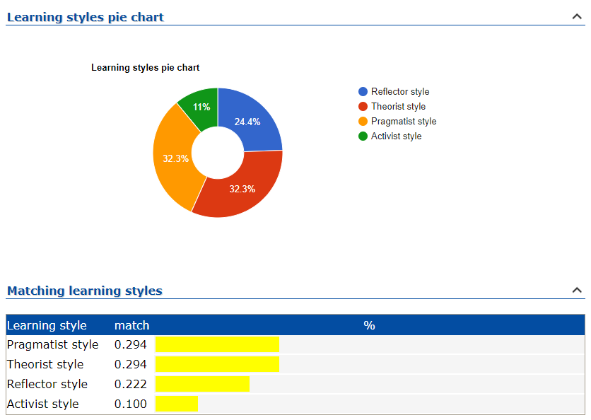

Based on my 16Personalities test I am a Logistician which is defined by “integrity, practical logic and tireless dedication to duty” (NERIS Analytics Ltd, 2011). Whilst I agree with the above points, and a majority of what was noted within the personality’s exploration, one thing that I was surprised by, but came to agree with as I reflected on the way I sometimes interact with others (mainly when my customer service facade slips) is that “their (Logistician’s) blunt approach leaves others with the false impression that Logisticians are cold, or even robotic” (NERIS Analytics Ltd, 2011).

This seems to lead perfectly into my learning style which is equal parts Pragmatist and Theorist. Whilst I think it’s great to brainstorm and take time-out to reflect, I would much prefer to jump straight into resolving an issue or putting my knowledge to practical use.
